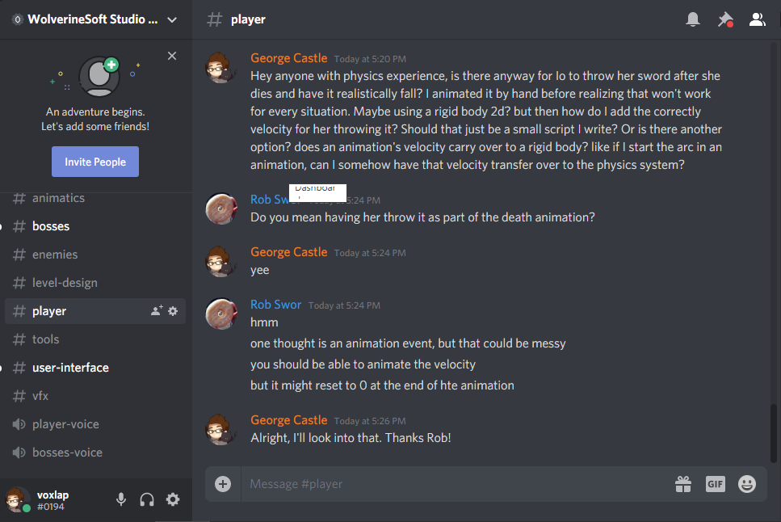

George Castle
Iterating on the Player Animations
Project Blue 4/6/2020
Player Pod Work
The Perfect Swing


My goal this time around was to revamp the attack animations, and the way that the attack animator layer was setup. I got started by making 3 different blendtrees, one that had animations where the player stepped forward before attacking that were to be played when they were not moving and grounded, one that had animations that had no leg keyframes, and one set that also included a downward attack for when the player was in the air, and finally I have them all play a sword sheathing animation when the attack finishes
For reference, here is the old horizontal attack, which is very stiff, and didn't well convey the attack direction

And here is the new.

This new animation was created by moving the bones in 3D space so that I could try and overcome the stiffness that the 2D bone animations had caused in the old animations. This caused a bit of a paper type look, but I feel that the added readability it adds to the swing is a worthwhile payoff

Pictured here is the upward attack animated using this same 3D style

And a version of the same animation with no leg or hip keyframes

And here's what it looked like in 3D

Finally, here's the new downward attack, which uses a minimal amount of the 3D effect, as it was more inline with the 2D perspective

That said, here's what it looks like in 3D
Lastly, here's the aforementioned sheathing animation
Leaping to New Heights

Next up, I wanted to revamp the player's jump and falling animations so they were more than just a single keyframe, so I added some rustling to the hair and Io's clothes
Life, Death, and Animations

Here we have my first attempt at a death animation, which continues off of Alyssa's OnHit animation. Originally I had hand animated the sword falling out of Io's hand, but realized that that wouldn't work if she were to die near the edge of the platform.
Upon realizing that my animation wasn't going to work as is, I turned to the studio server to ask if anyone had any ideas on how to pivot to using a physics driven sword
I didn't get a chance to enact any of that advice, so for now I just made the sword stay on her back when she dies
Giving the Scarf Some Weight

Tackling a long standing greivance with the game, I finally added a way to damper the motion of the scarf!

Here are the different settings for the different directions that the scarf movement could be dampered in

And here is the change that I added to the scarf code
Level Design Pod Work
Fixing the Background

I spent several hours fixing the parallax script! I made it so it's locked vertically to the camera, fixed the jitter of the movement, and fixed the way the prefab was setup so the effect is more subtle
General Studio Responsibilities:
Attending Leads meetings:
3 hours per week
Attending Studio Meetings:
2 hours per week